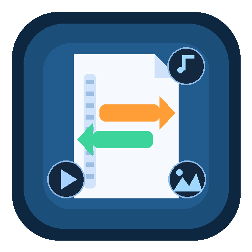

Media and documents
Convert images, audio, video, PDFs, documents, subtitles, and archive-ready outputs with backend-aware routing instead of guesswork.
Cross-platform desktop toolkit
Convert, compress, extract, package, inspect, download, and batch complex format work from one surface without turning the workflow into a scavenger hunt.

Positioning
Format Foundry covers the handoff points other tools leave behind: mass conversion, archive prep, document routing, metadata-safe packaging, download intake, and repeatable batch processing.
What it covers
Convert images, audio, video, PDFs, documents, subtitles, and archive-ready outputs with backend-aware routing instead of guesswork.
Use aria2-backed HTTP, FTP, SFTP, BitTorrent, magnet, and Metalink workflows with queue controls, file-level torrent selection, and visible progress states.
Run duplicate checks, storage analysis, rename flows, checksum verification, and batch presets from the same workspace instead of stitching scripts together by hand.
Workflow shape
Drag, queue, or point the app at the exact source set you want to work on.
Targeted format filters, backend detection, and output handling narrow the valid next step.
Progress stays readable while jobs are in flight, including torrent pause / resume / stop controls.
Installer builds, Debian packaging, AppImage output, and release assets follow the same version line.
Install paths
Windows
Use the setup executable for the normal install path. Portable app and standalone updater are available as direct assets when you need them.
Download the installerUbuntu / Debian
Use the `.deb` for a normal system install. AppImage remains available when you need a self-contained portable build.
Download the .debGet the current build
Open the download page for direct installers, fallback artifacts, and the live latest-release surface.